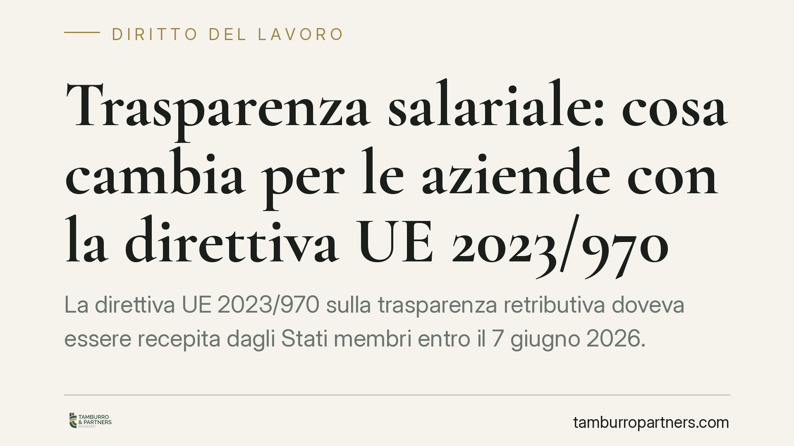

Trasparenza salariale: cosa cambia per le aziende con la direttiva UE 2023/970
La direttiva UE 2023/970 sulla trasparenza retributiva doveva essere recepita dagli Stati membri entro il 7 giugno 2026. Il provvedimento italiano di attuazione introduce obblighi informativi verso i lavoratori e un sistema di rendicontazione modulato sulle dimensioni aziendali. Per i datori di lavoro significa rivedere criteri retributivi, documentazione e prassi selettive prima che gli obblighi diventino pienamente operativi.

Il quadro normativo
La direttiva (UE) 2023/970 rafforza il principio di parità di retribuzione tra donne e uomini per lo stesso lavoro o per lavoro di pari valore. Il termine per il recepimento negli ordinamenti nazionali è fissato al 7 giugno 2026 (art. 34 della direttiva).
Alla data di redazione di questo contributo, il decreto legislativo italiano di attuazione risulta in corso di definizione. Numero, data e contenuti puntuali del testo definitivo vanno pertanto verificati sulla Gazzetta Ufficiale al momento dell'entrata in vigore: i valori indicati di seguito (soglie dimensionali, cadenze di rendicontazione, termini di risposta) derivano dalla direttiva europea e potrebbero essere adattati dal legislatore nazionale.
Il nuovo impianto si innesta su un sistema già esistente. L'art. 37 della Costituzione sancisce il diritto della donna lavoratrice a una retribuzione pari a quella dell'uomo a parità di lavoro. Il Codice delle pari opportunità (D.lgs. 198/2006) disciplina i rapporti sul lavoro sotto il profilo della parità di genere e prevede, all'art. 40, un'attenuazione dell'onere probatorio a favore di chi lamenta una discriminazione. La direttiva rafforza questa impostazione all'art. 18, spostando sul datore di lavoro l'onere di dimostrare l'assenza di discriminazione retributiva quando il lavoratore fornisce elementi che la lascino presumere.
Cosa introduce la disciplina europea
La direttiva costruisce la trasparenza retributiva su due livelli distinti.
Il primo è la trasparenza documentale: il diritto del lavoratore di ottenere informazioni sulla propria retribuzione e sui livelli retributivi medi, disaggregati per sesso, relativi a chi svolge lo stesso lavoro o lavoro di pari valore. È previsto anche un obbligo di trasparenza in fase di selezione, con informazioni sulla retribuzione iniziale già nell'annuncio o prima del colloquio, e il divieto di chiedere al candidato lo storico retributivo.
Il secondo livello è il piano negoziale: quando l'attività di rendicontazione evidenzia un divario retributivo di genere non giustificato da fattori oggettivi e neutri, e superiore a una soglia definita, scatta l'obbligo di una valutazione congiunta con le rappresentanze dei lavoratori, finalizzata a individuare e rimuovere le cause del divario.
Gli obblighi di reporting sono modulati per dimensione aziendale, con soglie e cadenze differenziate: le imprese più grandi rendicontano per prime e con maggiore frequenza. I termini precisi vanno letti sul testo di recepimento.
Implicazioni pratiche per il datore di lavoro
Il passaggio più rilevante riguarda la giustificazione delle scelte retributive. Quando il lavoratore porta elementi indiziari di disparità, spetta all'azienda dimostrare che le differenze poggiano su criteri oggettivi, neutri rispetto al genere e verificabili: esperienza, competenze, responsabilità, risultati misurabili.
Questo rende centrale la tracciabilità. Politiche retributive fondate su valutazioni discrezionali non documentate diventano difficili da difendere in un contenzioso. Occorre poter ricostruire, per ciascuna posizione, i parametri che hanno determinato il livello retributivo.
Rilevano anche le prassi di selezione: annunci che non indicano la retribuzione, o richieste di storico retributivo al candidato, dovranno essere riviste per allinearsi ai nuovi divieti.
Infine, la valutazione congiunta introduce un elemento di relazione con le rappresentanze sindacali e con i consiglieri di parità, che va gestito con un metodo predefinito e non improvvisato al momento dell'emersione del divario.
Cosa fare in concreto
- Mappare le posizioni raggruppandole per lavoro uguale o di pari valore, secondo criteri oggettivi (competenze, sforzo, responsabilità, condizioni di lavoro).
- Documentare i criteri retributivi: definire e formalizzare i parametri che giustificano ogni livello, così da poterli esibire in caso di contestazione.
- Rilevare eventuali divari di genere non spiegati da fattori neutri, individuando le posizioni più esposte prima che scattino gli obblighi di rendicontazione.
- Aggiornare le prassi di selezione: inserire l'informazione retributiva negli annunci ed eliminare la richiesta dello storico salariale ai candidati.
- Definire un metodo per la valutazione congiunta con le rappresentanze, così da avere una procedura pronta se emerge un divario superiore alla soglia.
È opportuno avviare la ricognizione interna con anticipo rispetto alle scadenze di rendicontazione: la costruzione di un sistema di criteri oggettivi richiede tempo e coinvolge funzioni diverse dell'organizzazione.
Disclaimer
Contributo informativo a cura di Tamburro & Partners - Avv. Giuseppe Tamburro. Non costituisce parere legale.
Ogni storia di lavoro ha i suoi tempi.
Se gestisci HR e vuoi un confronto su contenzioso, ispezioni o licenziamenti, scrivi allo studio. Ti rispondiamo entro un giorno lavorativo.